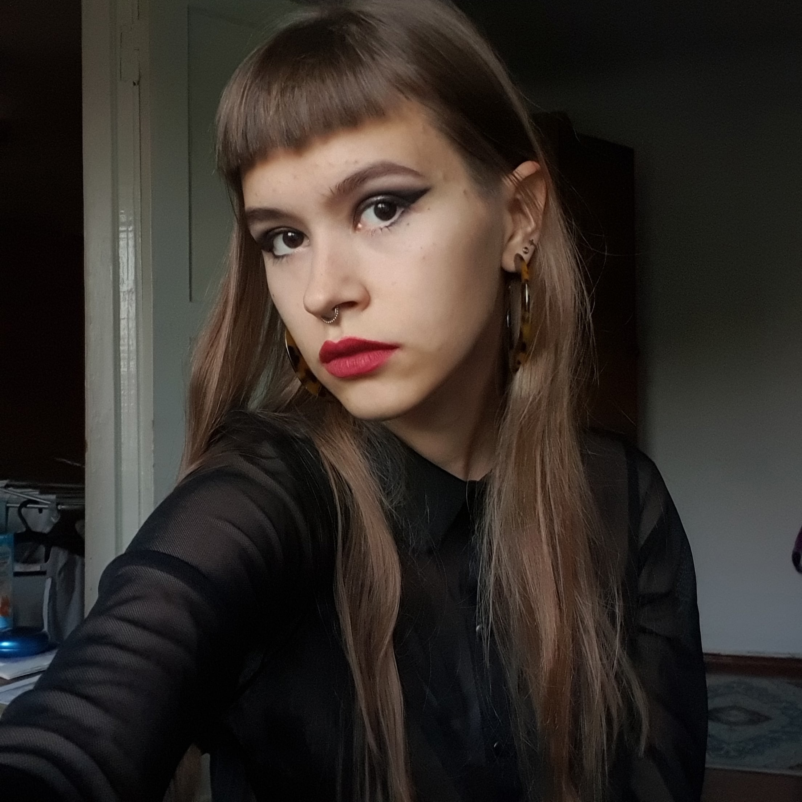
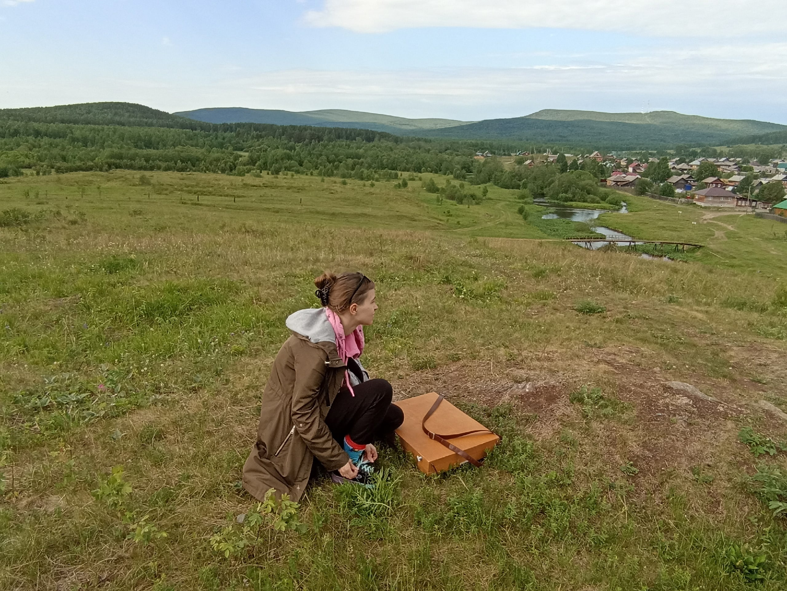
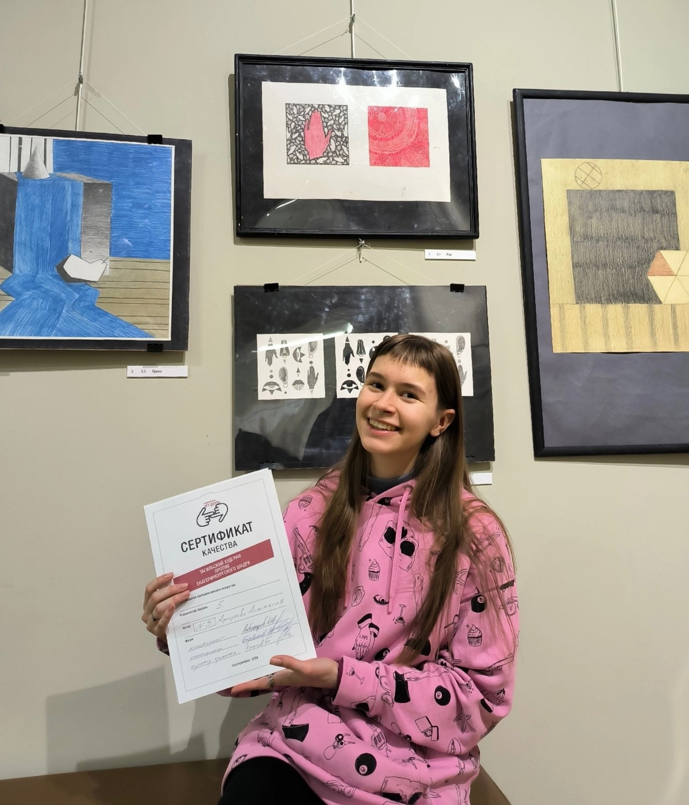
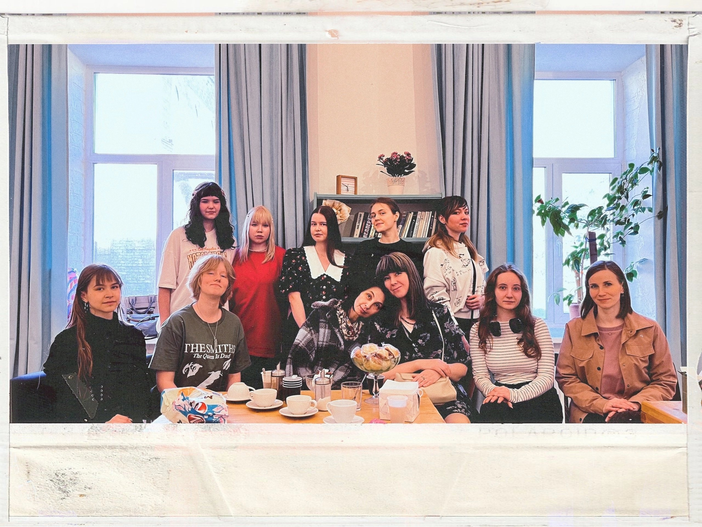
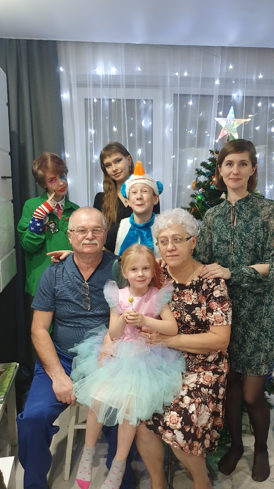
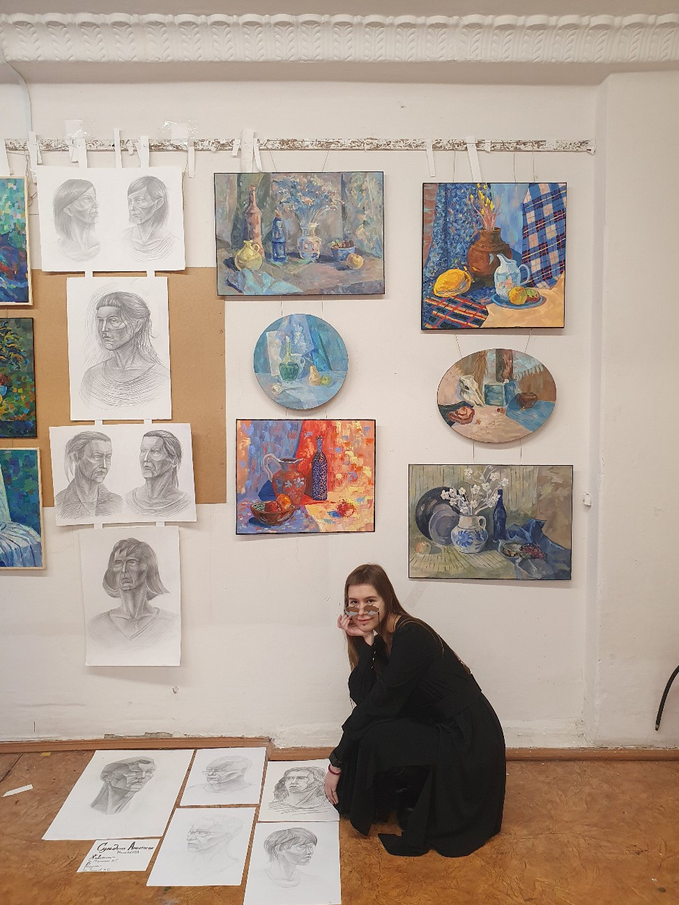
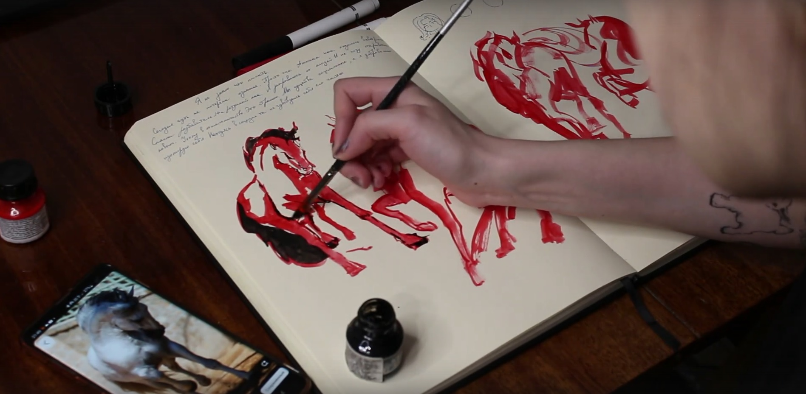
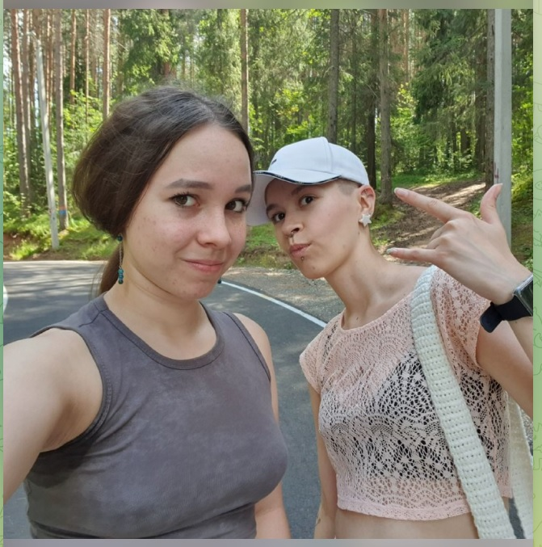
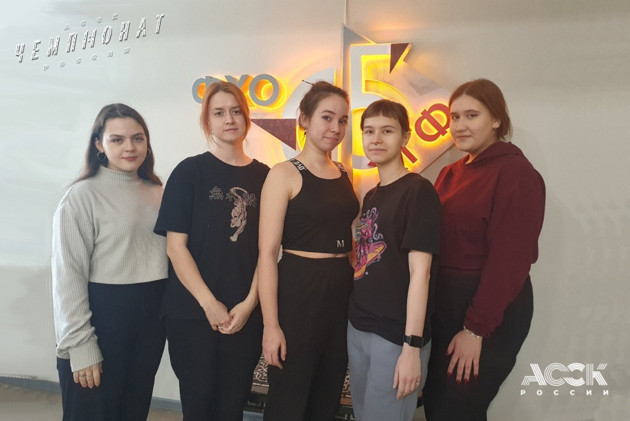

Другие имена: Аста, Арнаут
Страницы в интернете:
Родилась в октябре 2004 г. в Краснотурьинске.
Анастасия писала, что отца у нее не было.
О семье:
Все больше задумываюсь о том, что у нас может получиться семейный рабочий состав театра: я - художник декоратор/костюма, средняя сис Анчоус - актриса (ходит в театралку), младший бро Санек - хореограф (ходит на бальные танцы), самая мини Лиза пока ищет себя. Семья гуманитариев.
2022 г. - поступила на ФХО НТГСПИ (Изобразительное искусство и дизайн). Живет на съемной квартире на Руднике им. III Интернационала.
2023 г. - исполняла обязанности физорга в НГСПИ.
2023: Поездка на пленэр в Баранчинский с Виталиной Чураковой, Ангелиной Новоположской, Светланой Апретовой и Елизаветой Рубан.
https://www.youtube.com/watch?v=8A0ScOMRgq0
Я сделал стенограмму этого видео не из-за важности работ, выполненных на этом пленэре, а скорее из-за того, что оно дает представление о том, как художницы общаются между собой. Также оно дает кое-какую информацию о личности Виталины.
(В электропоезде)
Лина: (Позирует для фото)
Аста: Я видео снимаю
Лина: А... Oh my... Мы едем в Баранчу
Аста: Мы еще не доехали...
Лина: Это наш сопроводитель, которая нас выведет и которая ответственна за наши неудобства вообще...
Лина: (Показывает на Лизу)
Аста: (Виталине) Ваши слова насчет поездки?
Вита: Я надеюсь, мы не потеряемся.
Аста: Ну, надежда умирает последней.
(На горе в окрестностях поселка Баранчинский, дует сильный ветер)
Света: Приехали за город рисовать, вот девченки... Аста посмотри, поздоровайся.
Аста: (Машет рукой) Всем привет!
Света: Виталина, Ангелина. Вот мы. Тут у нас Баранчинская, там где-то... коровы где? Вон там они, маленькие. Это телята.
Света: Там тоже дальше коровы, камера, скорее всего, не передает. Вот так вот, на пленэр приехали.
(Лина позирует для фото)
Аста: Я видео снимаю
Лина: Почему не уведомляете?
Аста: Ха-ха-ха! О, козы.
Аста: (Снимает вид леса на горизонте) Супер лук!
(На реке)
Света: Вы набрали воды?
Лина: Да.
Света: Отлично!
Лина: Ты снимаешь?
Света: Да
Лиза: (Передразнивает) Я снимаю!
Света: Ха-ха-ха! Я тоже набираю водицу. Красота в глазах смотрящего.
Лиза: Я знаю, что я красивая.
Лина: Я самая пи...я!
Света: Ха-ха-ха
(На обеде)
Аста: С кого начнем обзор по дню? У нас обед. (Свете) Давай! Ваши впечатления, ощущения?
Света: Речка чистая...
Аста: Ноги мокрые...
Света: Ха-ха-ха
Лина: Ну так мы присели разок.
Света: Да все хорошо...
Лина: Ваше здоровье! (Отпивает)
Света: Работа идет, передаю слово моим коллегам.
Лина: Спасибо!
Аста: Лина реально как какой-то прошаренный пленэрщик
Лина: Вы знаете, как выживший какой-то в лесу, я люблю такие темы, потому что я и на пикник хочу вас затащить в лесу.
Аста: А это че, по твоему? (Показывает шоколадный батончик Picnic) Демо версия?
Лина: Демо версия. Ну, чисто, пикник.
Аста: Пока полгруппы не придет, полной версии не будет.
Лина: Короче, вообще все четко, едим бутики.
Аста: Ха-ха-ха
Лина: Лиза целует ланч-бокс, потому что он этого достоин.
(Все смеются)
Лина: Он нас спасет в это время.
(...)
Аста: Продолжаем. Кому слово следующему?
Лина: Я передаю Виталине, потому что я очень довольна, все нравится.
Вита: Супер, я довольна, что меня вытащили порисовать... Я не рада, что меня заставили рисовать.
Аста: Две крайности.
Вита: Ха-ха-ха. А рисовать это... Не, все круто!
Лиза: Сегодня... Ха-ха-ха
Аста: Дорогой дневник...
Лиза: Сегодня я впервые в своей жизни experience...
(Все смеются)
Лиза: Experienced this beutiful nature... Ха-ха-ха.
Аста: Так, обзор по дню. (Снимает себя в капюшоне на фоне окружающей природы).
Аста: Я конечно похоже на...
Лиза: Бомжа?
Аста: Нет, на яблоко, ха-ха-ха. Обзор по работам. Что мы сделали до перерыва?
Аста: (Показывает картину, прикрепленную к этюднику) Оно отлетает и держится на скотче, во всех смыслах. Жаль изоленты нету.
Аста: (Показывает картину) Почему не gory? Tagil?
Лиза: Это Баранча.
Аста: Я тебе больше скажу, в Гугле, в Яндексе, когда ты вбиваешь "Баранчинское", там дополнительно пишется, что это Нижний Тагил.
Лиза: Че?
Аста: Ну типа то, что неподалеку.
Лиза: (Твердо) Это поселок Баранчинский!
Аста: Блин, все это спрятано. Обзор по дню, по перерыву окончен, я хочу есть.
Аста: Снимаем реакцию на васаби
(Виталина пробует)
Аста: Причем на картинке там прям нормально обвалено, я не знаю.
Вита: О, прикольно! Мне нравится.
Аста: Да она просто обманывает.
Вита: Не, серьезно, кстати.
Аста: Ха-ха-ха
Лина: Мне, б..., нравится.
Вита: Я люблю васаби.
(Лина пробует)
Лина: ... не, послевкусие прикольное.
Лиза: Вкус арахиса классный.
Лина: В принципе пойдет.
Света: Щас найду самую, вот...
Аста: Заваленную?
Света: Заваленную (Пробует)
Лина: Не рассасывай, не надо...
(Все смеются)
Света: Знаете, я покупала Нори, обваленные в васаби, но там жопа была
Лина: Чья?
Света: Все хорошо.
Света: (Передает Лизе) Пахнет как?
Лина: Як пахнэ?
(Все смеются)
(Лиза пробует, отходит, брызгает в рот водой)
Аста: Ха-ха-ха
Света: Снимай, снимай!
Лина: Освежитель воздуха...
Аста: Да Лиз, не все так плохо.
Лиза: Ну, на вкус как чеснок, я ненавижу чеснок.
Лина: Да, кстати, я хотела тебе сказать об этом.
Аста: Давайте, последний.
Аста: Мне теперь страшно это пробовать, потому что с этим вообще... "Норм", и Лиза - "Эээ".
Аста: Я сейчас к Лизе добавлюсь. (Пробует)
Аста: Хотя...
Лина: Да не, нормально. Послевкусие
Аста: Мне это напоминает наоборот, сухарики с хреном. Но я не люблю арахис.
Аста: (Пробует еще, смеется) Не, штука прикольная.
Вита: Кто хочет больше?
Аста: Я такой штукой заниматься не буду.
Лина: Ну, вода есть.
Вита: У меня там целый литр.
Света: Раз, два, три. (Виталина, Лина и Света пробуют)
Аста: Я сейчас понимаю Лизу. Я на них смотрю, и че-то как-то вот так...
(Света морщится, остальные смеются)
Аста: Света... Этим смешно, Лина - хомяк...
Света: Сидим на горе все еще. Прошло уже время пол первого.
Света: Солнышко, вот оно, над головой. Рисуем, я их рисую, а они меня, надеюсь.
Света: Дует ветер, все сдувает. Кто-то сдулся уже, сидит как может
Света: (Снимает Лину, которая рисует, сидя на земле)
Света: (Асте) Как ваше ничего?
Аста: Замечательно, а ваше?
Света: Ни...я
Аста: Кхм-кхм
Света: (Снимает коробку с водой, в которой плавают насекомые)
Света: Плавают жуки... Или нет?
Света: (Снимает Виталину за работой)
Вита: Работу чуть не сдуло, вот так улетела...
Света: Нам сейчас деревенские дети тут...
(Виталина залезает на дерево)
Аста: Виталина, я тебя умоляю!
Лиза: Скорая сюда не доедет
Света: К слову, высота два метра, тут ветка отломится... Виталина, держись за что-нибудь!
Света: Слушай, тут не очень мягко, не падай!
Света: Сезон Виталины на деревьях объявляю открытым.
Вита: Весело!
Света: Слазей давай, весело ей
Света: Хожу в лесу, собираю грибы и тут от меня убегает птичка
Света: Ой, его не видно, он такой маленький
(Снимает птицу, похожую на дрозда)
Света: А че ты такой маленький? Да, птица? Такой маленький, смотри.
Аста: Включение. Как ваше настроение?
Лина: Да ваще... Я готова здесь жить! Еще бы еда не кончалась...
Аста: Виталина?
Вита: (Показывает палец, поднятый вверх)
Аста: Полазила, довольная
Вита: Да, я стерла все руки
Лина: Я пересрала сто раз
Лиза: (С пакетом на голове) Я чувствую себя космонавтом
Света: Перешли из березового леса вон там в сосновый. Вон там девченки расположились за кустом... Не видно.
Света: А Виталина убежала в лес, я пошла ее искать.
Света: Вот в этой яме, там типа вот яма, там 100% медведь спал.
Света: Догнала Виту, вот она, наконец-то. Никуда какать не села, слава Богу. И мы нашли шалаш.
Вита: (Трогает рукой шалаш)
Света: Да не ломай ты, господи. Вот тут яма для запасов... А здесь костер был.
Света: Тут спать. Тут я понимаю уже воняет в лесу.
Света: Вернулись с Виталиной. Лиза сидит в мусорном пакете, ест.
Лиза: Это дождевик
Света: Девченки тут сидят, и скоро у нас будет гроза.
Света: Вот сейчас солнце светит, а там гроза идет, и гремит уже все.
(На перроне)
Аста: По сегодняшнему дню отчет.
Лина: Знаете, я чувствую себя мегакрутой, потому что я сделала 4 работы и за вчера, и за сегодня!
Вита: Мне не дали погулять по лесу, я расстроена...
Лина: (Гладит Виталину по голове) Мы беспокоимся.
Аста: Зато живая!
Аста: Свете не дали посмотреть Тик-Ток.
Света: Я была уставшая с утра, потом у меня был прилив бодрости.
Света: Потом, когда я поняла, что у меня ни одна работа не получилась, у меня этот прилив бодрости абсолютно иссяк... Сейчас я хочу домой.
Лиза: Мне мама позвонила, а у меня голос грустный был.
Лиза: Мне это не понравилось, но, скорее всего, все в порядке.
Лина: Я че у всех все плохо, я не поняла?! Я одна тут такая...
Аста: Не переживай, не ты одна, нас двое. (Снимает себя, смеется)
Света: Такая ноздря, знаешь.
Аста: А сколько я? Я сделала пять работ.
Лина: (Показывает гусеницу на ладони)
Аста: Билет на гусеницу поменяла.
Света: Это зюзя! (Смеется)
Также на этой пленэрной практике художницы отреставрировали табличку для водоколонки (https://vk.com/wall-213873622_142).

На пленэре в п. Баранчинский, 2023
2024 г.
В феврале 2024 г. участвовала в выставке-конкурсе "Арт-Дуэль" в Екатеринбурге. На эту выставку она ездила с Ангелиной Новоположской, Никой Костроминой и Натальей Томиловой. Художницы также посетили в Екатеринбурге павильон Эрмитаж Урал и Музей андеграунда. "Арт-Дуэль" - важное событие в жизни героини и ее подруг, вероятно, их первая крупная выставка, поэтому имеет смысл остановиться на ней поподробнее. Об этой поездке Ангелина сняла видео: https://www.youtube.com/watch?v=JbaMtWzohUk&t=37s. Несмотря на то, что в нем мало реплик Анастасии, я решил сделать подробную, почти полную, его стенограмму, так как оно дает некоторое представление о взглядах на искусство, которые витают в окружении героини.
(На вокзале в Нижнем Тагиле)
Лина: Сегодня просто невероятная аномалия с погодой, и мы едем в Екатеринбург
Лина: Сейчас дождусь девчонок и мы отправимся в небольшое такое путешествие
Ната: Я проснулась в 5 утра, думала все, капец...
Лина: Так я тоже, че-то да, я в 5 встала
Ника: Я написала, что я проснулась, и ко мне в дверь стучат!
Ната: Да нормально я постучалась...
Лина: О, Наташа ответственная, молодец! Я написала "Ну ка, быстро..."
Ната: Я уже третий раз сумку проверила, ничего вроде не забыла
Лина: Так, у нас третий вагон? А, да, третий.
(В вагоне)
Лина: Стартуем.
Ната: Мы летим
Лина: (Смеется) как сказала мама Наташи, "Че, взлетели?"
Ната: Покажи наш вид из окна... и наши куртки. Зеленые и черные, как лес.
Лина: (Смеется) Я буду лежать вот так... Так там смотреть нечего. Темнота.
Лина: Мы переместили...
Ника: Коллективный разум
Вместе: По полям, по полям, синий трактор едет к нам, у него... (смех)
(...)
Лина: Это драйв!
Ната: Флеш не берите...
Ника: И вода
Лина: У тебя че там?
Ника: Святой источник
Лина: Освежитесь
Ника: Я не завтракала, у меня жидкости полный портфель
(...)
Ната: Мне мама пишет гороскоп сегодня у меня: "Приглядывай за кошельком и деньгами, и телефоном"
Лина: (Смееется)
Ника: Мы стояли у Невьянска, папа, привет
Лина: Хаха. Передаем привет, знаешь, как "Поле чудес"
Ника: А, сегодня у моей мамы день рождения... передайте поздравления...
Лина: А как у твоей мамы имя-отчество?
Ника: Ольга Григорьевна Астахова
Лина: Ольга Григорьевна, мы очень рады, что вы в такой замечательный день родились. Это классно!
Ника: Зачем, мама... В такой холодный?
Лина: Почему? Можно пояснить как-то... раз вы владелец этого дня, как бы. Хотелось бы подробности
Ника: Еще и Путин приезжает, мама, ты че, совсем, что ли?
Лина: Это подарок
(Все смеются)
(В Екатеринбурге)
Лина: Мы наконец-то разобрались с билетами и определились, куда пойдем покушать, это прекрасная Pizza Mia
Лина: Я обожаю эту пиццу, вот
Ната: Пицца топ, особенно с ананасом
Лина: Оказывается, нельзя перцовые баллончики. Я просто, со своим...
Ника: Ставьте лайки, кто любит пиццу с ананасами и за перцовые баллончики
Ната: Там будет мой один лайк
Лина: А в смысле, подождите... зачем?
Лина: Нет, нам туда. Мы в пиццу
Лина: Это какой-то ужас, вообще
Ната: С запотевшими очками
Лина: Мы, значит, идем в пиццу Mia, а она с десяти
Ната: А время 9:30
Ника: Это так смешно...
Ната: Потом мы идем в другое место, там тоже с десяти.
Ната: Круглосуточный магазин, друзья, круглосуточный, он закрыт
Лина: Мы в итоге стоим в шашлычной, которая рядом с пиццей
Лина: Потому что я очень хочу в пиццерию
Ника: Позевать даже нельзя...
Лина: А мы все фиксируем
Лина: Поэтому щас мы тут потусим немножко, и самые первые посетители просто в Pizza Mia... Задолбали уже...
Ната: Мы хотели погреться в другом месте, где мы проходили, но там опять надо проходить контроль
Лина: Но там не войти вообще, где это...
Ната: Только выйти
(Все смеются)
Лина: Наконец-то зашли, дождались пиццы
Лина: (Показывает вилку) Цивилизованно, все-таки, с Тагила приехали
Ната: Из небольшого городка
Лина: Я очень люблю эту пиццерию, так что хоть сейчас традицию внесу, может
Лина: Ну тут и по цене прям вообще нравится. Еще раскрасочку продают на подносе
Ната: А, да?
Лина: Да, для детей, типа... Ну и для нас, естественно (Смеется)
Лина: Так, ваши ощущения?
Ната: От чего?
(...)
Ната: Это пирог с картошкой
Лина: Ну, тебе нравится?
Ната: Хорошо, что я заказала не две...
Лина: Я говорю, она сытная очень... Сколько едите? Деревенская
Лина: 7 из 10.
Ната: (Показывает восемь пальцев)
Лина: А, 8? Нифига!
(...)
Ника: (Складывает из салфетки птицу)
Лина: Хи-хи
Ника: Непрезентабельно...
Ника: Да, блин, вы думаете у нас все так...
(Смех)
Лина: Мастер-класс
Ника: Ну, какой есть, что я сделаю
(Смех)
Лина: Хороший... Ой какой.
Ника: Но его как будто автобус переехал
Лина: Как назовешь?
Ника: Ахлипий
Лина: У ты Господи
Ника: Делаю на заказ.
Ника: Во-первых, я хочу сказать, что атмосфера... это помещение, рабочий персонал, музыка и атмосфера, мне все нравится
Лина: Ура!
Ника: На персонал я всегда обращаю внимание.. вот.
Ника: Хорошие люди, вежливые. Мне прям понравилось. Приятного аппетита постоянно.
Ника: Я 100 раз сказала "спасибо", вот.
Ната: А еще мы испугались
Лина: Да... (Смеется) Ну там, ситуация...
Ника: Чуть-чуть стыдно стало
Лина: Да-да-да
Ника: Я подхожу такая, до этого сказали пять минут ждать. Я спустя пять минут подхожу, "Че, сколько ждать?"
Ника: Она говорит, еще пять минут... А в моей голове я говорю, "Еще пять минут?!"
Ника: Вот, а она услышала первый вариант.
Ника: Она испугалась, замолчала такая, "минуты три". Я поняла, что... (Смеется)
Лина: Есть конечно получше, да...
Ника: Я поняла, что меня испугались и такая "А, да, без проблем вообще"
Ника: Вот, мне нравится, мне вкусно
Ника: Я встаю, думаю десерт выбрать, там написано "Пончик" и "Трайфл"
Ника: Пончик не написано, какой там: с начинкой, без; я подумала, возьму трайфл, а я не знаю, что это такое
Лина: Хи-хи-хи
Ника: Я давай гуглить просто "Трайфл"
Лина: Так, как тебе, 10 из 10 барбекю пицца?
Ника: 8
Лина: Какая у тебя, сырная еще была... А сырная?
Ника: Сырная - 7 из 10
Лина: Ага
Лина: И еще какая-то... Эта, баварская
Ника: Баварская? Блин, она вкусная. 9 из 10
Лина: Ух
Ника: Она как окрошка со вкусом
Лина: Наташа, а тебе как барбекю
Ната: Барбекю - лучше, чем домашняя
Лина: (Смеется)
Ната: Этот... пирог домашний.
Ната: На ужин готовили, и ты сидишь его, ешь, потому, что надо
Ната: Я поставила бы 6.5. Уже понизила, было 8, стало 6.5
Ната: А какая вторая?
Лина: Барбекю
Ната: Барбекю? 8
Лина: О, у вас вообще да, я рада
Лина: А я брала впервые Пепперони
(...)
(Позднее на улице; к девушкам присоединяется Анастасия)
Аста: ...О, это ко мне в клуб... сопливых
Ника: Вот, к нам человечек присоединился
(Лина машет руками)
Ника: Ой, сколько счастья!
Аста: Сколько соплей...
Лина: Вечером бы прогуляться здесь, вообще красиво
(...)
Ника: Как часто у вас потеет?
Лина: Я тебя вижу чисто пятном (смеется)
Ника: Мы прошли... (смеется)
Аста: Я в Париже!
Лина: Мы запутались
Ника: Мы пропустили музей... Мы идем обратно.
Лина: Ничего страшного
Ника: В Эрмитаж!
Лина: В Эрмитаж, да
Ника: Вперед, товарищи!
(...)
Ника: Снимайте
Лина: ...я не знаю, не нажимать?
Аста: Всем привет!
(В павильоне Эрмитаж Урал)
Лина: (Тихо) Наконец-то мы хоть в каком-то музее
Лина: Потому что в... "Главный переулок", да, он называется, музей, мы не попали... Проспект? Переулок?
Лина: Поэтому сейчас мы в Эрмитаже
(Аста и Наташа поправляют волосы перед зеркалом)
Аста: (Неразборчиво) Все не кул, мы продали [...]
Лина: (Смеется) Нам надо было билеты купить в Эрмитаж, понимаете...
Ника: (Снимает женский портрет эпохи классицизма)
Ника: Что за женщина... глазки мне строит. Ты давай, поаккуратней
Ника: (Снимает Лину) Еще одна глазки строит
Ника: (Снимает большое полотно с лошадью и большим количеством человеческих фигур) Я в шоке! Как так можно
Лина: (Тихо) Очень красиво! Я в восторге.
Ника: Красота!
Лина: ... я так рада!
Ника: Ты так вписываешься со свитером (Снимает Лину на фоне портрета Петра I)
Ника: Произведение искусства... щас ее не выпустят отсюда, подумают - вынесли произведение, украли
(В Музее андеграунда)
Лина: Такой контраст, если честно, с Эрмитажем и сейчас Андеграундом
Лина: (Снимает картину с домиками на холме)
Лина: Вот это чисто наш худграф. Атмосфера, вот правда, не... вот прям че-то родное, вот это бы я купила
Лина: Сколько она стоит? 30 000? Нет, не купила бы
Лина: Очень много интересных картин, необычных, но интересных по композиции. Но пока что не все нравится
Лина: (Снимает авангардную картину со странной желтой фигурой)
(Все смеются)
Лина: Прости, Жора, ты тоже туда попадешь... Привет, Жора!
Ника: Зеленый бегемот!
Лина: (Снимает авангардную статуэтку) Вот этого я не понимаю (Смеется)
Лина: (Снимает картину, на которой бык с лицом человека и обнаженная женщина)
Лина: "Какой-то вайб" картина называется
Лина: (Снимает картину с рыбой и сидящим человеком)
Лина: Студенты художественных вузов (Смеется)
Лина: (Снимает композицию с двумя пересекающимися цветными кругами)
Лина: А это что такое? Ой
(...)
Лина: (Снимает инсталляцию с хлебом и тараканом)
Ника: (Тянет руку к таракану)
Лина: О Боже, нет! Отдай
Ника: (Мотает головой)
Лина: Ну ладно
Ника: Вкусно
Лина: Обедать не пойдем
Ника: Со вкусом... искусства
Лина: Мне кажется, мы не успеем обойти всю выставку
Лина: Но то, что мы увидели, это определенно оставляет очень сильные эмоции, правда
Ника: Я груша... Ой, нет, я вишня
Лина: (Смеется)
(...)
Лина: Как вам впечатления?
Ната: Интересные знаки вон там...
Лина: Какие? А, круги
Ната: Да, кругляшки 80+, нельзя заходить парам и нельзя, мда... Как вот третий ты назовешь знак?
Лина: Я бы сказала...
Ната: Мы культурные
(...)
Лина: Много непонятных, но очень интересных. Вызывает эмоции...
Ната: Особенно "Как я стал лаптем" [Работа Сергея Браткова]
Лина: Ну вот это забавно, когда относятся с юмором, закладывают смысл именно вот позитивный
Ната: А не вот такое-вот что-то (Показывает на телефоне фотографию авангардной картины с неопределенным сюжетом)
Лина: Ну да. Мне такое вот тоже непонятно, мне это не близко совсем
Лина: Поэтому... (Смеется)
Ната: Или вот такое
Лина: (Смеется) Извините. Многое вызывает улыбку, но многое вызывает просто...
Лина: Мы вроде бы посмотрели все залы, но, кажется, как будто бы здесь есть еще
Лина: Возможно, мы сюда вернемся. Но в целом мне очень понравилось. Очень необычно
Лина: Ника, ваше мнение?
Ника: Специфично... понятное дело, что современное искусство вызывает, это, внимание, благодаря эмоциям, противоречиям, вот
Ника: Но многое мне нравится
Лина: Да, тоже согласна как бы. Я все понимаю, но некоторые так не близко, вообще, даже...
Лина: Но оно вызывает отрицательные эмоции, значит это искусство, но оно не твое
(...)
Ника: (Снимает картину в стиле кубизма с котами) Коты себя так и ведут, правда
(На улице)
Лина: Покушали, стали добрее, ха-ха... Оттого, что не могли найти нормально где покушать. Сейчас все хорошо
Лина: Сейчас мы идем на Арт-дуэль
Лина: Я не помню, как называется музей, но я надеюсь, мы что-то заняли и мы выиграли в этом соревновании (Смеется)
(На Арт-дуэли)
Лина: (Протирает телефон) Запотешки...
Ника: Сфоткай нас
Лина: Щас
(...)
Ведущий: ...позволит максимально беспристрастно оценить участников...
Ведущий: Номер пятнадцать - Кизилова Ангелина
(Аплодисменты)
Лина: (Подходит, берет грамоту, в которой написано "Количество баллов: 6")
Лина: Мы очень хорошо справились с задачей, да
Лина: Мне кажется, преподаватели будут гордиться
Ника: Да. И мы сами собой
Лина: Мне вообще так нравится, что люди приходили и сами голосовали
Лина: То есть типа, ну, свое какое-то видение, они за нас голосовали
Ната: Интересно, сколько баллов у каждого
Лина: Да я не знаю...
Ната: Пойдемте посмотрим
Лина: Пойдемте
(На вокзале)
Лина: Мы скоро поедем домой (Смеется)
Ника: Как здорово!
Лина: Что все мы здесь
Ника: Сегодня
Лина: Собрались. Мне тоже грустно. Я подустала, но мне было весело
Ника: Я не хочу...
Лина: Но придется
Ника: Да
Лина: У нас сегодня весь день каких-то приключений
Лина: То баллончики, то вагон не обслуживается, нас переселили в другой вагон
Аста: Хотя бы номера нормальные
Лина: Да-да-да. Но как бы... сегодня очень много непредвиденных обстоятельств каких-то
Лина: Мы не могли найти кофейню хорошую, хотя на карте она показывалась именно в том месте, где мы шли
Ника: Зато мы не умерли
Лина: (Смеется) Позитив от Ники!
(В вагоне)
Лина: Как ваши впечатления от дня?
Ника: На самом деле, я счастлива, потому что... потому что потому
Ника: Это приятная поездка с приятными людьми, вот
Ника: Мне нравится путешествовать, это отвлекает, ну, от обычной обстановки
Лина: Согласна
Ника: Вот, я с комфортными людьми в комфортном месте. И, несмотря на все потасовки...
Лина: Стычки (Смеется)
Ника: ...Стычки и казусы - это ничто по сравнению с тем, что хорошее было
Лина: Да, я тоже вообще рада, что мы выбрались, провели день классно в окружении друг друга (Смеется)
(...)
Лина: В общем, я думаю, все рады. Ты как?
Ната: Я умотана, как собака
Лина: (Смеется)
Ната: Зато честно. Ну, очень круто что-то, побыть в Екатерибурге, пофлешбечить
Ника: Алапаевск, привет! Спасибо за таких прекрасных людей, как Наташа
Лина: (Смеется)
Ника: Алапаевск, рожай... Ну, кхм
Ната: О, стартуем
Лина: А, уже да, мы поехали
Ника: Прям попала в кадр (Смеется) Мы стартовали реально с этого...
Лина: Наташа по таймингам
Ната: Я, конечно...
(...)
(Лина и Наташа прилегли головами на Нику)
Ника: Меня любят
Лина: Уставшие, но довольные
Ната: Посмотрите на эту атмосферу...
Ната: (Снимает вагон) Нихера не видно
Лина: Горизонтально!
Ната: (Снимает вид из окна перевернутым телефоном) Я надеюсь, там видно. Ну, так красиво
Ната: А господи, я перевернула его
Лина: (Смеется) Класс!
Ника: Мы сейчас все три часа будем записывать?
Лина: Да. Как мы уснем...
Ника: Сколько гибабайт у тебя?
Лина: Гибабайт много...
Ника: (Смеется)
Лина: Продолжается ситуация о непредвиденных обстоятельствах
Ника: Встала электричка по техническим причинам
Лина: Да, мы встали и непонятно, сможем ли мы поехать дальше
Ника: Да щас поедем
Лина: Сегодня столько ситуаций разруливалось, конечно
Лина: Просто, надеюсь, что люди, которые едут не в Тагил, у нас же как проездной этот, ласточка проездная
Ната: ...до Качканара
Лина: Да, до Качканара
Ника: О, мама звонит
(...)
Ника: 24 часа челлендж в ласточке... мне нравится. Я не хочу вообще...
Аста: Знаете что забавно? Нам пять минут всего идти, а вам в другой город ехать
Аста: Вам то тяжело будет, вы сейчас...
Лина: Нет, не тяжело. Я даже не знаю, что дальше будет
Ната: Блин, реально еще, как добраться то?
Ника: Я во-первых не хочу в Тагил, во-вторых я не хочу на учебу
Ника: В-третьих, я не хочу в общагу, поэтому у меня вообще идеально...
Лина: Не пойдем на философию! (Смеется)
Лина: Все на меня чисто посмотрели. Мы пойдем из ласточки
Аста: (Зажмуривает глаза)
Лина: Не, я просто типа, мы будем спать здесь
Ната: Завтра можно поспать после пар
Лина: Блин, не успела заснять, как ты зеваешь
Лина: (Показывает открытку, на которой репродукция картины с котами)
Лина: Это мы вот щас стоим в пробке
Ната: С такими же лицами
Аста: (Смотрит в телефон и смеется)
Лина: Аста... Все, капец
Ната: "...Мне уже третий десяток..."
Ника: Вот тут я с ней согласна
Аста: Вам тоже третий десяток
Лина: Не, второй пока
Ника: Вот тут я с ней согласна
Лина: (Иронично) А тут я согласна, а тут не согласна
Аста: Так в этом году уже третий (Смеется)
Ника: Так, не надо, нет
Лина: Ты общие черты не ищи, я боюсь, ужас
Ната: (Показывает телефон) Евгений написал "Скоро в гробик" в ответ на ее сообщение, что ей третий десяток
Лина: Ха-ха-ха!
Ната: И смайлик
Лина: Какой ты смешной, Женя! Кто кого вперед?
Автор проекта конкурса, Борис Хохонов, опубликовал об этом событии статью Арт-Дуэль в Краеведческом музее в газете "Время" (№4 от 18 апреля 2024, издатель - СДК "Банк культурной информации", Екатеринбург). Эта статья, видимо, одно из первых упоминаний Анастасии в прессе. Вот что в статье написано о правилах конкурса (кричащее выделение заглавными буквами я заменил на жирный):
Во-первых, авторы произведений участвуют в конкурсе инкогнито, что полностью исключает возможность апелляции к авторитету. К тому же это развязывает руки зрителю, который может не оглядываться на общественное мнение при формировании своего собственного. [...]
Во-вторых, каждому зрителю предлагается лично оценить находящиеся в экспозиции работы. При этом, учитывая свободу от общественного мнения и мнения авторитета, личное предпочтение с наибольшей вероятностью становится собственной визуальной ценностью зрителя. Оценка производится по специальной анкете, посредством присуждения «баллов» тем или иным визуальным «качествам» выставленной работы. Далее анкета сдаётся зрителем в обработку, где её оценка суммируются с оценками анкет других зрителей, высчитывается средний балл, и по нему сразу можно увидеть самую любезную сердцу «совокупного зрителя» работу. [...] Эта часть конкурса называется Vox populi (Глас народа).
В-третьих, кроме Vox populi существует мнение профессионального жюри, состоящего из людей искушённых, с насмотренностью и (или) с профессиональным образованием. А это коллекционеры, галерейщики, культурологи, искусствоведы и т.д. Другими словами, люди с большим культурным «бэкграундом» и с поставленными глазами, то есть знающие, как смотреть и умеющие это делать.
Автор также обосновывает значение мероприятия для культурного просвещения зрителей:
...И в-четвёртых, после подведения итогов наиболее интересующийся зритель может сравнить свои оценки с оценками как Vox populi, так и с оценками профессионального жюри. Именно здесь «зарыта собака» под названием самообразование или культурный рост. Да и просто образование, в конце концов. Вот и получается, что победа в этих гонках достаётся не художнику как автору картины, а самой картине, и зависит она скорее от зрителя, а не от художника.
Более того, заинтересованный зритель вынужден тратить на оценку работ существенно больше энергии, чем на обычной выставке. А это означает, что картины, участвующие в конкурсе Арт-Дуэль, запомнятся ему лучше и будут дольше играть активную роль в построении траектории его судьбы в будущем.
Конкурс проходил с декабря 2023 по февраль 2024 в Свердловском областном краеведческом музее имени О.Е.Клера. Первым этапом было соревнование профессиональных художников, нас же интересует второй этап, в котором участвовали студенческие команды:
Второй этап Арт-Дуэли проходил в тех же залах с 15 января по 15 февраля сего года. Участвовали студенты художественного факультета Тагильского педагогического университета и студенты Екатеринбургского «Шадра».
Здесь НТГСПИ почему-то неправильно назван педагогическим университетом, а «Шадр» - это, видимо, Свердловское художественное училище имени И. Д. Шадра.
Результаты голосования второго (студенческого) этапа следующие:
Vox populi – 110–100 в пользу Екатеринбурга;
Профессиональное Жюри – 100–100. Ничья.
Победу Екатеринбурга в Vox populi можно объяснить двумя стратегическими просчётами Тагильской команды, ну и тем, что «…ведь это наши горы, они помогут нам!» Стратегический просчёт номер один – очень большое количество ровных по мастерству работ. Зрителя обычно хватало на первые (с начала экспозиции) 8 авторов. Остальных зритель просто не отражал в анкете. А вот Шадровцы все были не обделены вниманием зрителя. Принимая во внимание, что конкурс командный и играет свою роль не общее количество баллов, а средний балл, то конечно Тагил был почти всегда в пролёте. Стратегический просчёт номер два – ставка на графику. В экспозиции Тагила была всего одна живописная работа. Правда, это был шедевр, лучшая живописная работа всей Арт-Дуэли, но «одна ласточка погоды не делает». [...]
О решении профессионального жюри. Здесь также сыграла свою роль «меньшая любовь» искушённых профессионалов к графике нежели к живописи. Ну не может адекватно оценить бардовскую песню поклонник джазовой музыки. И единственное, в чём жюри оказалось на высоте (то есть попросту было адекватным), это в оценке всей экспозиции как единого целого. Здесь, конечно, все лавры по праву были отданы Тагилу, и этот «лишний» балл и вывел Худграф на ничью с Шадром.
Судя по сертификатам на фотоснимках, у Анастасии было 5 баллов, у Ангелины - 6.
В заключение Борис делает смелые выводы о значимости состязания:
Самый главный итог Арт-Дуэли, прошедшей в краеведческом музее города Екатеринбурга в конце 2023 и начале 2024 годов, это тот факт, что 436 человек будут до конца жизни помнить о картинах, за которые они проголосовали. То есть эти зрители (точно, без вариантов, железно) пополнили свою личную «копилку» новыми визуальными ценностями, которыми они, сами того не подозревая, будут активно пользоваться всю оставшуюся жизнь.
Ну что ж, если это действительно так, я не зря потратил время на разбор статьи.
Антон Прокопов писал в группе ФХО о результатах конкурса: "В целом по результатам голосования «победила дружба». Выставка от ХГФ получила одобрение членов профессиональной комиссии и баллы за «атмосферу и целостность представленной экспозиции»." (https://vk.com/wall-4891369_8002)

На выставке-конкурсе "Арт-Дуэль", 2024
Март 2024: участвовала в выставке Не художник, а творец на ФХО НТГСПИ. Ее организатором была Полина Попова, концепция выставки - показать, чем занимаются студенты второго курса вне вузовской деятельности. Анастасия говорила, что выставила работы, посвященные личным переживаниям, событиям своей жизни.
Сменила фамилию и отчество с Сульдина Анастасия Константиновна на Арнаутова Анастасия Александровна (фамилия прабабушки). Считала предыдущую фамилию не своей. Первоначально хотела взять матчество или прочерк вместо отчества, однако служащие МФЦ отказали в этом, объясняя это тем, что матчество законом не предусмотрено, а прочерк вместо отчества предусмотрен, но лишь для иностранных граждан. Анастасия считала это незаконным и заявляла, что могла бы оспорить это, но решила этого не делать, и взяла отчество Александровна в честь прабабушки Александры. На деле здесь все обстоит чуть сложнее.
По Семейному кодексу отчество гражданину присваивается по имени отца, если иное не предусмотрено законами субъектов Российской Федерации или не основано на национальном обычае: Статья 58 СК РФ. Однако в законодательстве нет четких указаний, кто именно имеет право на иной порядок присвоения отчества по национальным обычаям (ни в каких официальных документах у нас национальности вообще не фигурируют), а также что делать в случаях, когда отец неизвестен или мать не хочет его раскрывать. После достижения совершеннолетия гражданин теоретически может поменять отчество на любой другое, которое укажет в заявлении. Но в каких случаях можно заменить отчество на матчество ("матроним") или прочерк, опять же, четких указаний нет. Видимо, предполагается, что это должны решать индивидуально служащие загсов, или, в спорных случаях, судья. Практика показывает, что отдельные случаи присвоения матронимов в России были.
Несмотря на то, что девушка оставила видео с подробными объяснениями по поводу этого эпизода, кое-что здесь все равно непонятно. Что она имела в виду под "...извините, а если у нас с хуем никого нет?.." Почему Анастасия решила взять именно фамилию прабабушки, через 2 предыдущих поколения? Возможно, в ее семье хорошо знают историю своих предков и гордятся ими. Из исторических примеров удалось найти, что архитектор Ле Корбюзье взял себе фамилию прабабушки (его первоначальная фамилия была Жаннере): Laurianne Simonin. Le Corbusier: 5 Facts to Know.

На выставке "Вдохновляйся! Действуй!", 2024 г.
2024-2025 гг. - имела отношения с неизвестным парнем, которые завершились неудачно. Анастасия ждала его из армии, а он в определенный момент перестал активно с ней общаться.
Из видео в Телеграм:
Я уже в который раз пытаюсь перезаписать эту историю, потому что я ухожу то в лес, то по дрова, или история о том, как за один вечер бросить все мысли о бывшем. Ведь вся моя жизнь - анекдот, попытки найти настоящую любовь - просто сплошная драма. Я люблю ушами, и нассать в уши мне как нехер делать. Какой вывод сегодня сделала я себе о всех вот этих вот крайних отношениях. По сути, действий было предпринято каких-либо практически ноль с той стороны. Были постоянные обещания, какие-то слова просто в никуда, которые подкреплены ничем, и опять же любимый холод, ура, который буквально тебя начинает сводить с ума. 10 из 10, в каком-то смысле потом еще начинается газлайтинг, а вот образ, который остался, такой добрый, теплый, где тебя принимают. На словах, пускай, но тебя принимают, вау, кто-то посторонний, помимо твоей семьи, он оставался фоном, и мне было тяжело как-то двигаться вперед, пускай, что-то там где-то прошлое, я даже работу посвятила этому своему бывшему. Сегодня как раз был разговор с психологиней насчет моей агрессии и насчет того, что по сути это в какой-то мере является газлайтингом. Все, сессия окончена, я не агрессивная, оказывается это нормальная реакция, когда тебе что-то не нравится и ты встаешь в позу и проявляешь свой характер. Я поняла, что мне в очередной раз нассали просто в уши, потому что я удобная. Типа "А, ты идешь в армию, хорошо, типа я ждать не буду, точнее не обещаю, но мы попытаемся". Хорошо, да, все таки я сделаю исключение, одену на себя розовые очки и разобью их сама себе линзами, которые я разобью сама себе в глаза. Потому что начинаешь сходить с ума, ну короче там, держи тебе там подарок на Новый Год, я всегда тебя выслушаю, я постоянно на телефоне, я тебя жду. А потом ты видишь, как появляются какие-то кружки в канале, ты видишь, что появляется человек в сети, но тебе ничего не пишет. И возникает дохерища вопросов, на что тебе дают ответ либо там "Все хорошо", супер сухой и непонятный, начинает человек путаться в показаниях своих, либо вообще просто игнор. Ура, круто, классно, и я сейчас понимаю, что я была удобной, чисто для того, чтобы у человека было меньше стресса из-за того, что он уходит в армию и есть тот, кто его ждет. Потом чувства просто пропали, о котором мне ничего не сказали.
Вывод сей басни таков: не нужно плакать по чечикам, которые просто что-то говорят, обещают, но при этом нихера не делают, например, не могут тебе отправить письмо из армии - боже, это так сложно - не могут тебе позвонить, написать "С добрым утром", а идут выкладывать кружочки в канал, где занимаются всякой херней. Ну короче, я снова прошляпилась, я наконец-то уже это признала, и можно жить дальше! Шлем нахер всех таких тюбиков и не нужно тратить на них свои нервы.
Март 2025 г. - Пыталась подрабатывать моделью на своем факультете, но и здесь нашу героиню преследовали неприятности. Работать было тяжело, так как в аудитории было холодно, и студенты постоянно заходили в аудиторию по середине занятия. Кроме того, некоторые рисующие стали без разрешения скидывать ее фотографии тем, кто не ходил на занятия.
Из видео в Телеграм:
Я хотела написать пост о том, что у меня очень сильно горит очко, но букв настолько много, что мне проще записать кружки, которые никто не посмотрит, либо посмотрит 3 человека, либо они разошлются по всем небольшим, так скажем, участникам нашей подгруппы, чтобы обсудить этот вопрос. Кто-то скажет, что я вообще охерела, кто-то меня поддержит и так далее, но не важно. Мне главное вылить свое говно, потому что у меня сегодня настолько очко сгорело, это... хоть стой, хоть падай.
Начинаем с предыстории: я согласилась в своей подгруппе постоять моделью, обнаженной, потому что никто, собственно, не соглашается, кто-то стесняется, для кого-то это неудобно, пятое-десятое. ОК, мне насрать, постою за копейки. Я понимаю, что нужно делать задание всем, у меня это задание просто уберут. ОК, как бы, вроде бы я не в минусе. Человек я вечно опаздывающий, поэтому у меня еще вначале спросили, а ты не будешь опаздывать? Ни разу, блядь, не опоздала, в отличие от моих любимых одногруппников. И знаете почему у меня так горит, меня рисуют три человека полноценно, из двенадцати нахуй. С другой стороны, блин, да радуйся, что тебя рисует меньше человек, да нихуя подобного. Потому что потом подходят все остальные и начинается хождение по мукам, блядь. Ты стоишь нахуй полуголый, в одних трусах, холодно, блядь, тебе в спину дует, обогреватель нихуя не греет, у тебя нога затекает, еще все сука туда-сюда, дверь открыли, посмотрели, пятое-десятое. Еб твою мать, что за балаган, блядь.
Или мы все-таки находимся в учебном, блядь, заведении, и все-таки нужно придти чуть-чуть пораньше на пару, чтобы выложить масло, подготовить палитру, краски, халат надеть, нет, нужно приехать уже тогда, когда началась пара. Сегодня, блядь, два человека на паре за три минуты до звонка. Что насчет остальных? А нахуй нам надо! Мне далеко ехать, так мне тоже нахуй далеко ехать с Рудника. Я в 7:45 специально выхожу, потому что потом ты хуй уедешь. Либо на забитом 34-м, если он дай Боже появится, а так следующий автобус только в 8:50 двойка. Будь моя воля, я бы на ней ездила, потому что на ней 25 минут, в отличие от других автобусов, которые едут 40. А что? Почему студентам можно опаздывать, блядь, а мне нет? Ну типа, а что? Все равно я типа приеду эти полчаса тоже, все равно они будут туда-сюда ходить, искать мольберты, блядь. Искать, сука, свое масло, искать палитры, выкладывать. А ты стоишь нахуй полуголый, в этой незакрытой аудитории, и что? Уважение к друг другу есть? О, бля, нихуя. Это первый аспект, который меня сегодня прям так... ух нахуй. Это просто, я считаю некрасиво, вы можете иметь любое мнение, мне на это похуй, это мой канал, высираю что хочу и обсираю что хочу.
А теперь перейдем к тому, из-за чего у меня очко сгорело, блядь, не знаю сколько раз. Я значит, добрая душа, разрешила себя сфотографировать. Ну потому что, во-первых, ракурсы постоянно меняются, позы постоянно меняются, какие-то более удачные, какие-то нет, плюс ко всему, чтобы потом была возможность дома дописать. Все прекрасно понимают, нет, надо было нахуй переотправлять мои фотографии кому-то другому, кого на парах не было, без моего разрешения. Мне абсолютно похуй, что мы являемся одной подгруппой, одной группой, так давайте в общий чат сразу блядь кидать, а что? Этика у нас не существует, зачем она нам, нам же надо делать задания. А спросить у меня русским языком написать "Аста, можно?" - ты же разрешишь, нахуй нам спрашивать? Я просто, блядь... У меня просто слов нет! Разошли десятерым друзьям, получи, сука, бонус. Или что, это так работает? Вот мне неприятно, блядь. Мне неприятны эти вот, сука, хождения по мукам, когда туда-сюда все шмонаются, а ты стоишь блядь, по сути твое время оплачивается блядь, я сяду нахуй и все, смысл мне стоять? Я простывшая, блядь, стою. Потому что холодно нахуй, и эти часы все равно нужно отрабатывать, так как есть люди, которые пишут. Я делаю себе перерывы каждые десять минут, потому что нахуй никому не надо, что я стою. Я даже когда перерывы делаю, все тоже отдыхают. Вместо того, чтобы писать фон, разбираться с массами, разбираться тем, с чем у тебя есть возможность. Либо, когда я стою, кто-то делает перерывы или уходит, блядь, в туалет на 20 минут.
Вот честно, будь моя воля, я бы написала жалобу куратору и декану. Но я знаю, что от этого нихуя не изменится, потому что у нас не институт блядь, а просто какое-то сборище балагана, мусорная помойка. На пары не ходишь, а у тебя все равно будет по живописи или рисунку 4, если рисуешь более-менее. И смысл что-либо делать? Его нет. А те люди, которые там переотправляют мои фотографии второй модели без разрешения? Вот за свои я могу сказать, что если на просмотре увижу хоть одну такую работу, ждите там дорисованных усов, разрезов, пятого-десятого. Всего у одного человека есть разрешение на домашку писать меня, у остальных ее нет.
Те, кто сейчас оскорбился, обиделся, что ну вот, у меня там проблемы, мы не в равных условиях всегда. А мы всегда не будем в равных условиях, кто-то работает, кто-то еще там занят чем-то, в чем блядь проблема написать мне и спросить, можно я тебя напишу по фотографии? Если ответ "Нет", значит нет, ну теперь уже. Открывайте свой ебучий Pinterest, раз уж вы такие занятые, и рисуйте оттуда. Не надо делать вид, что вы там "ходили на пары", рисую одногруппников, выполняю классное задание. Нет, все, акция окончена. Если б мне было интересно выслушивать чьи-то сторонние мнения, противоположные, о том, что всем нужно выполнять работы, Аста, кто-то более занятой, кто-то менее занятой, пятое-десятое, да мне похуй. Мне объективно похуй, честно, в лицо могу сказать. Просто я не хочу выяснять никаких отношений, разборов полетов, вот это вот слушать, что мы не в равных условиях, вот я там работаю. Если вам сложно написать мне и спросить разрешения, или попросить прощения сегодня, когда это все вскрылось, а с хуя ли мне должно быть просто вот это все принимать, типа это ОК, это норма? Для меня это дикость, это тоже мое мнение, так что, пошло все в пизду. И вдогонку насчет опозданий, типа что ну ладно, ну посидишь ты там на полчасика подольше просто так постоишь, но тебе же от этого легче, на полчаса меньше что-то там делать. Так я ради этого блядь, просто полчаса посидеть, встаю раньше, выхожу раньше, трачу свое время, трачу свои силы, ради чего? Ради того, чтобы просто посидеть полчасика? Эти полчасика я и дома могу посидеть. А что, у меня еще на следующей неделе все-таки есть эти пары. Давайте я буду просто не приезжать нахуй, и дома посижу, вы там с фотографии рисуйте. А че, ну классно же? И мне проще, вам проще. Но это касается тех, кто блядь, ходит хуй через хуй.
2025, о рисовании тушью (из видео https://vk.com/arrrrrnaut?from=groups&z=video-213873622_456239019%2Fvideos-213873622%2Fpl_-213873622_-2):
Для техники скетчинга мне нравится использовать тушь + кисть, не перо, иначе я буду скрипеть зубами, беситься, потому что перо может уйти куда-то не туда. Плюс ко всему ты на это тратишь куда больше времени, пытаешься прорисовать линии, а в данном упражнении, так скажем, важней пятно и в принципе пластика, динамика силуэта, нежели каких-то отдельных его частей. Впоследствии будет заметно, что первая работа у меня очень сильно отличается от последующих, такая более вычерченная, страх сделать какую-то неправильную линию, страх куда-то не туда увести кисточку. Впоследствии разрисовываешься, и твои работы становятся более живые. Второй, третий скетч мне понравились больше всех, я их даже оформила. Четвертый, прошу прощения, не влез у меня по композиции, жопа коня отрезалась, и как бы ни к селу ни к городу. Поэтому он тоже мне не особо понравился.
Прелесть таких рисуночков в том, что во-первых ты разрисовываешься, во-вторых перестаешь бояться чистого листа, потому что может что-то не получиться, и в принципе из того, что получилось, можно сделать еще лучше конфетку, еще лучше ягодку, как-то доработать это впоследствии в цифровой графике, живописи, не знаю, не шарю за это... Доработала я все это именно в цифровом варианте, просто перевела в различные режимы, не знаю... Вот все эти технические моменты, это не про меня... Добавила пару линий, что-то стерла, сделала рамочку. Это мой максимум как бы, но работа стала выглядеть лучше. Как можно заметить, я сначала делаю подложку из красного цвета, посветлее, основные пятна, которые будет более проще - т.е. проще, без "более", ОК да? Все-таки 70 с чем то баллов по русскому должны себя оправдывать? У меня с ним очень плохо, я не знаю, как сдала на эти баллы... Похвасталась спустя три года, да. Ну в общем-то, собственно черным я залила какие-то более крупные пятна: гриву, тени, дорабатывать дополнительные элементы, которые мне хотелось выделить, оторвать какие-то детали, например голову от туловища, чего я не делала цветом, тенью на момент покраски красным. Вот, здесь главное не зацикливаться на деталях, смотреть именно на силуэт, попытаться передать характер коня, персонажа именно через силуэт, а также какие-то небольшие детали, элементы как динамика например, живопись... Все, я уже тут заговариваюсь... Живописности, живости - ну вы поняли короче, да? Я больше не умничаю.
Зачем я вообще рисую этих коней? Каждый год для своей мамы я рисую персональные календари, 2026 год попадает на год красной огненной лошади. Чаще всего, каждый год я делаю это все в последний момент, в декабре, в лучшем случае начинаю в ноябре, но кто мы такие? Наверное уже за календарей пять нужно понять, что сани готовить нужно летом, иначе будет гореть не только жопа с дедлайнами, но и в принципе все: гори сарай, гори и хата. Поэтому решила я начать все-таки весной и попрактиковаться на рисовании этих самых лошадей, чтобы лучше понимать стилизацию, как лучше все сделать, потому что в этому году календарь будет нарисован тушью. Собственно, красные + черные чернила я выбрала для скетчинга те, которые не жалко, которые у меня валяются уже который год. Оригиналы скорее всего будут уже написаны, нарисованы... Надо было посмотреть на этикетку [...] У кого там уходили распадающиеся чернила? Малевич, вот, вспомнила! [...] Почему Малевич, а не Кахимир? Кахимир мне не нравятся тем, что начинают блестеть когда высыхают, и тушь, а не чернила, ну в общем, свои тараканы в голове. [...] Хотелось бы выпустить небольшую партию этих календарей и все-таки продать в этом году. Возможно, это еще одна причина, по которой я делаю это все заранее, ибо никто не будет покупать календарь в декабре за пару дней до Нового Года [...]
Июнь 2025. Критиковала организацию просмотров на ФХО: дату просмотра перенесли в последний момент, мало места для вывешивания работ, требуют оформления работ только ради того, чтобы на них две минуты посмотрели. Заявляла, что из-за этих проблем равнодушно относилась к подготовке работ для этого просмотра.
Сентябрь 2025. Поездка в Верхнюю Туру с преподавателями (https://t.me/OTVALMASKI/2000, https://vk.com/id710687284?w=wall710687284_561).
Два этюда: арт-объект "Древо памяти города-завода" на набережной (https://nashural.ru/dostoprimechatelnosti-urala/sverdlovskaya-oblast/gorod-verhnyaya-tura-sverdlovskaya-oblast-dostoprimechatelnosti-chto-posmotret-turistam) и лодочная станция (https://katya-kch96.livejournal.com/1932098.html). Анастасия сама вызвалась участвовать в этой поездке. Поездка оставила у нее приятные впечатления, в отличие от описанной ранее поездки в Баранчинский, на этот раз ей не пришлось преодолевать кучу трудностей.
...это оказалася самый комфортный выезд: нас покормили два раза, преподаватели возили на машине (а не ходили пешим с тяжелыми этюдниками и прочей атрибутикой), показали город и в целом очень хорошо провели время. [...]
А и ещё: люди. Никто не отвлекал от работы, кто-то фотографировал/ снимал, делали комплименты, как дети, так и взрослые. Особенно запомнилась девочка лет 9, а точнее ее восторженное "ВАУ!.." на первую работу
Октябрь 2025. Из-за малоподвижного образа жизни и постоянной работы в неудобной позе начала испытывать боль в спине, которая мешала сидеть и стоять. Писала о том, что попасть на прием к неврологу ей было сложно.
Декабрь 2025. Делала курсовую работу о театральной живописи Бенуа и Коровина, в связи с этим выкладывала в Telegram посты с анализом произведений, например: Декорация к опере «Руслан и Людмила». Ее анализ выглядит достаточно серьезным, похоже, Анастасию по настоящему привлекает театральная живопись.

С семьей, 2024 г.

На просмотре

За работой, 2025 г.
Личность
В период обучения в НТГСПИ Анастасия испытывала психологические проблемы (тревожность, страх смерти, вспышки агрессии), обращалась с этим к психологу. Это было вызвано, видимо, проживанием одной в чужом городе, а также проблемами в учебе и в личной жизни. С некоторыми одногруппниками имела конфликты, с другими, например Виталиной Чураковой, была в хороших отношениях (они вместе ездили в Краснотурьинск).

C Виталиной Чураковой в Краснотурьинске
С матерью, видимо, она также в хороших отношениях. Известно, что когда Анастасия болела, мать приезжала в Тагил поддержать ее.
Интересы
Помимо живописи, занимается изготовлением кукол. В июне 2025 нашла на съемной квартире сломанную швейную машинку, которую ей удалось починить и использовать для изготовления простых изделий (куклы она, видимо, шьет все же вручную).
Публикует в интернете видео о своей жизни, подвергая их продвинутому монтажу (накладывает изображения, субтитры). Именно благодаря им нам открываются детали ее жизни и скандальные подробности о событиях на ФХО.
Музыка: группы Дурной Вкус, Диктофон
Спорт: Ходила в бассейн. В 2024 вместе с Виталиной участвовала в соревнованиях АССК НТГСПИ по волейболу в составе команды "Раритет" (https://vk.com/photo-187984395_457247460).

С волейбольной командой, 2024 г.
В чем смысл этого? Когда она станет известной художницей, возможно, эти записи будут иметь историческое значение.
Составление начато в мае 2025 г.